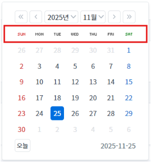
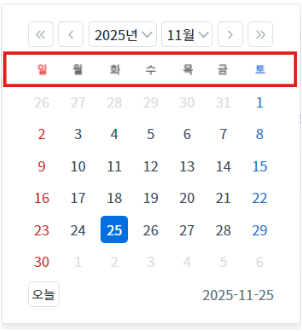
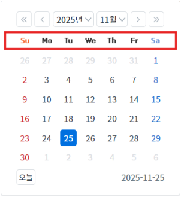
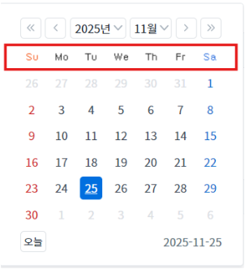
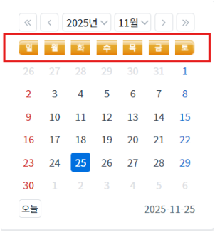
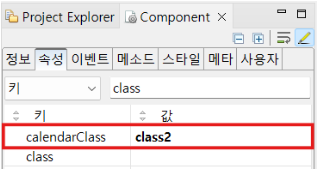

InputCalendar가 가진 5가지 스타일의 달력 스킨을 확인할 수 있는 예제입니다. 'calendarClass' 속성으로 설정할 수 있습니다.
'calendarClass' 속성의 설정 값에 따른 달력 스킨 설정하기
1
STEP 1: 달력 확인하기
아이콘을 클릭하여 달력을 확인합니다.
Image 1.브라우저(Chrome) 실행 예시
2
STEP 2: 설정 값 결과 확인하기
Image 2.브라우저(Chrome) 실행 예시 - 설정 값 'class1'

Image 3.브라우저(Chrome) 실행 예시 - 설정 값 'class2'

Image 4.브라우저(Chrome) 실행 예시 - 설정 값 'class3'

Image 5.브라우저(Chrome) 실행 예시 - 설정 값 'class4'

Image 6.브라우저(Chrome) 실행 예시 - 설정 값 'class5'

1
InputCalendar의 속성을 정의합니다.
[필수] calendarClass="옵션 값"
Image 7.웹스퀘어 스튜디오의 Component View - 속성 설정 예시

calendarClass